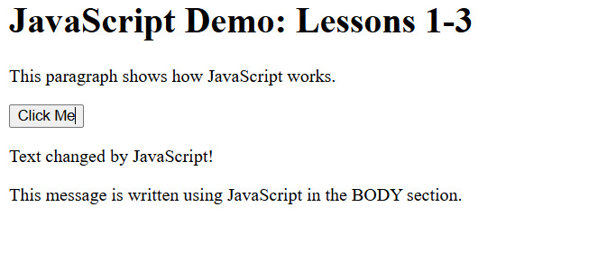
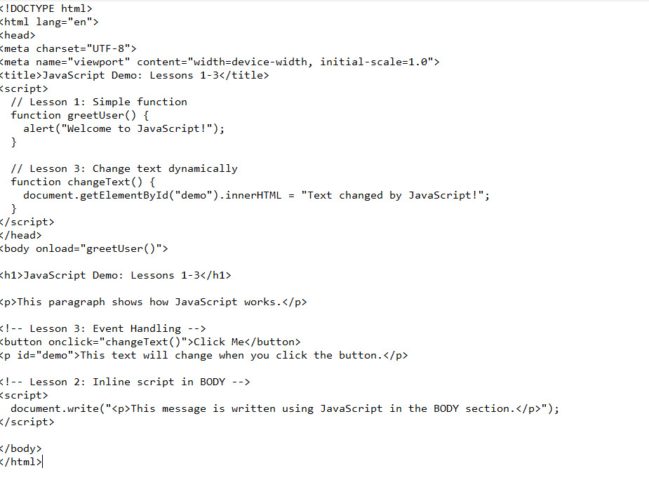

What is a Script? A script is a set of computer instructions or commands that connects components to accomplish a task.
JavaScript:
Characteristics of JavaScript:
Important Terms:
Summary: JavaScript is a client-side scripting language used to create interactive, functional websites. It runs in browsers, supports object-oriented programming, and works with events, methods, and properties to control web page behavior.
Where can you place Scripts? You can control when your JavaScript code runs by placing it in different parts of the HTML file.
.js files can be linked using <script src="myJavaScript.js"></script>. This is helpful for using the same code across multiple HTML files.Comments in JavaScript:
// This is a comment/* This is a comment */JavaScript Guidelines:
myHome ≠ MyHomevar name = "Grace";document.write("wow\\Philippines");Summary: Scripts can be placed in the HEAD, BODY, or externally. Always follow JavaScript rules for case sensitivity, proper spacing, and line breaks to avoid errors.
What are JavaScript Events? Events are actions or occurrences that happen in the browser, such as:
onload)onclick)onmouseover)oninput)How to Handle Events:
<button onclick="greet()">Click Me</button>function greet() { alert("Hello!"); }Common JavaScript Actions:
Summary: Events allow JavaScript to respond to user actions or browser activity. By combining functions with events, we can create interactive and dynamic web pages.


Lesson 1: I learned that JavaScript is a client-side scripting language that allows me to make websites interactive. I learned the key terms like objects, methods, properties, events, and variables, and how JavaScript works together with HTML to create dynamic pages.
Lesson 2: I learned that I can place scripts in different parts of an HTML file to control when they run. I also learned the importance of JavaScript guidelines such as case sensitivity, white space, and properly breaking code lines for error-free execution.
Lesson 3: I learned that JavaScript can respond to user actions through events like clicks, typing, and hovering. Using functions and event handlers, I can create interactive web pages that dynamically change content or display messages.